Bernard Walter Standing 1925 - 1970
[ Home ] | [ Calendar ] | [ Surnames Index ] | [ Family History ]A typewriter mechanic and workshop manager and the son of William Standing (a laundryman) and Eliza Parr, Bernard Standing, the fourth cousin once-removed on the father's side of <a href="I1.html">Nigel Horne</a>, was born in Ilford, London, England on Sep 7, 1925<span class="citation">1,2,3,4</span> and. He married Rose Jackson (a shorthand typist with whom he had 1 surviving child) in Ilford on Jun 4, 1949<span class="citation">6</span>.</p><p>Throughout his life, he lived at his birthplace in 1949 (the same place as his father had been living on Jun 19, 1921); and at 71 Berkeley Avenue in Ilford in 1964<span class="citation">7</span> and in 1970. <p>He died on Oct 21, 1970 at King George Hospital in Ilford<span class="citation">2,4,5</span> (cardiac infraction and coronary thrombosis) and was buried at Barkingside Garden of Rest Cemetery, Barkingside, London, England after Oct 21, 1970.
Parents
- William Ernest was born on Aug 12, 1878
- Eliza Mary was born on May 19, 1885
Citations
- England & Wales births 1837-2006 - Findmypast
- England & Wales deaths 1837-2007 - Findmypast
- England & Wales, Birth Index: 1916-2005 Online publication - Provo, UT, USA: The Generations Network, Inc., 2008.Original data - General Register Office. England and Wales Civil Registration Indexes. London, England: General Register Office. © Crown copyright. Published by permission of the Cont
- England & Wales, Death Index: 1984-2005 Online publication - Provo, UT, USA: The Generations Network, Inc., 2007.Original data - General Register Office. England and Wales Civil Registration Indexes. London, England: General Register Office. © Crown copyright. Published by permission of the Cont
- England & Wales Government Probate Death Index 1960-2019 - Findmypast
- England & Wales Marriages 1837-2005 - Findmypast
- London, England, Electoral Registers, 1832-1965 Ancestry.com Operations, Inc.
Media
Bernard Standing
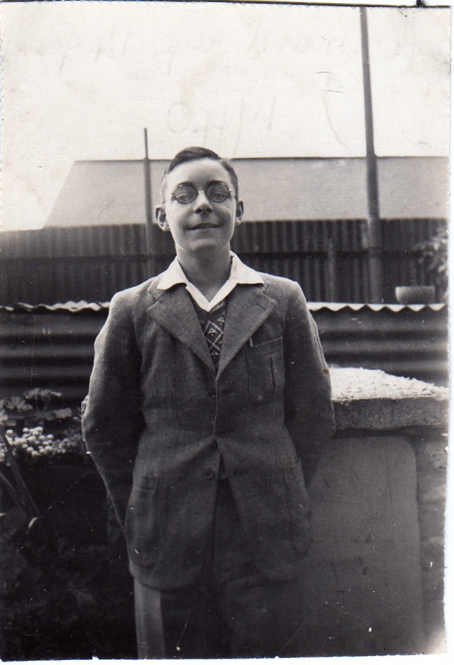
Bernard Standing - 2
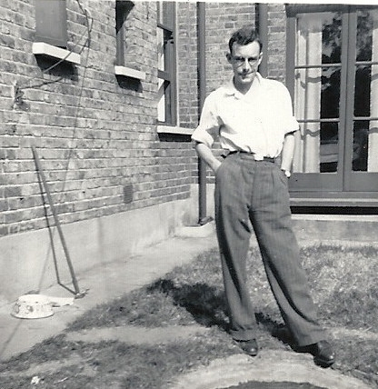
Bernard Standing - 3
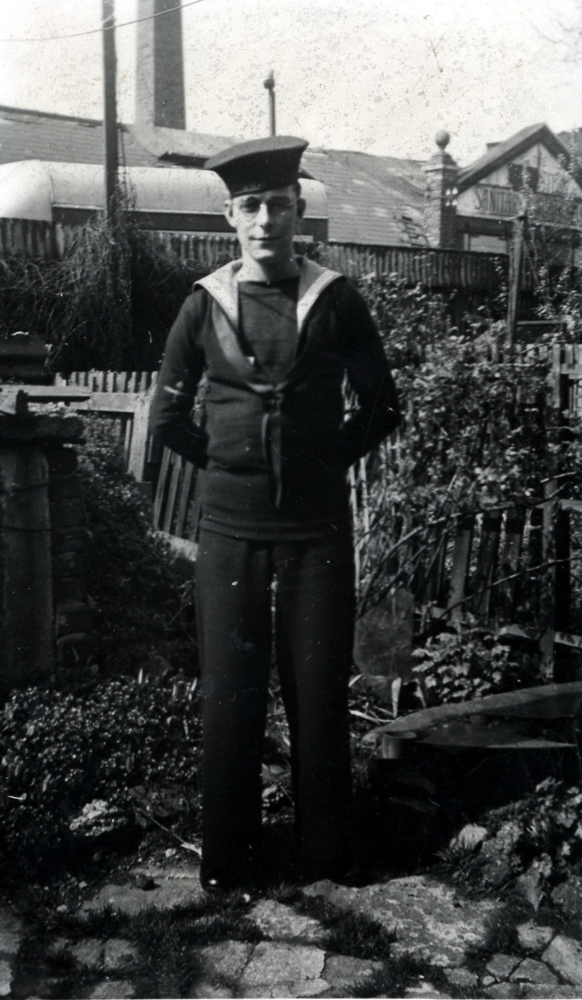
Bernard Standing - Rose Jackson - marriage certifi
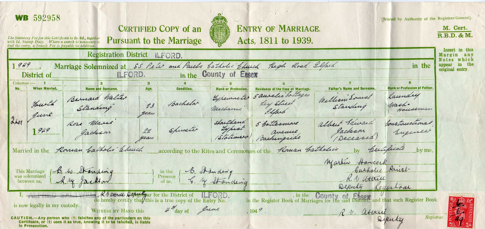
Bernard Standing - death certificate

Bernard Standing - birth certificate

Bernard Standing - Grave Registration Details
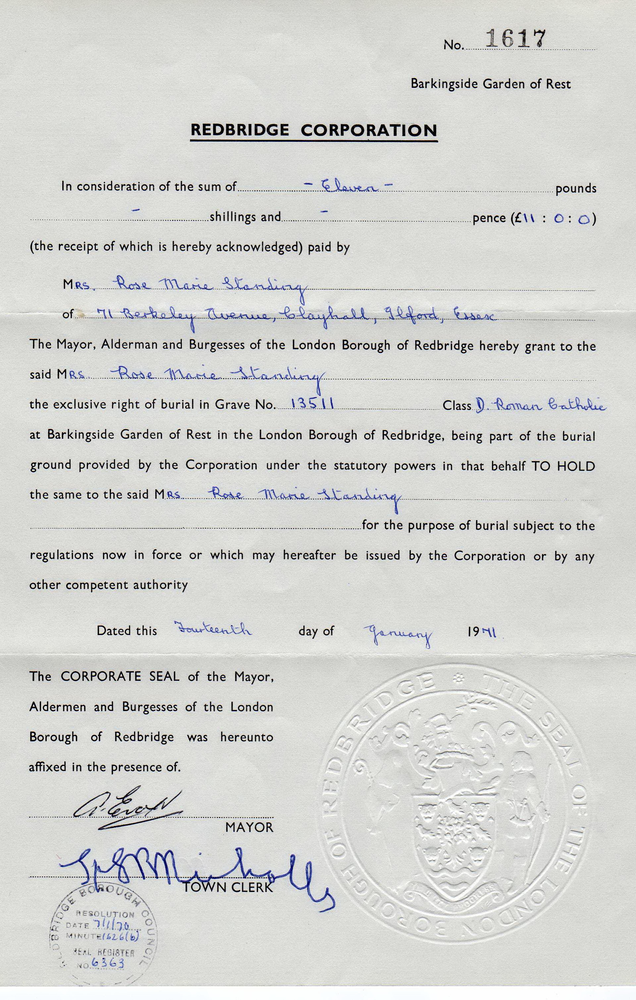
Bernard Standing - Grave Registration Details - 2
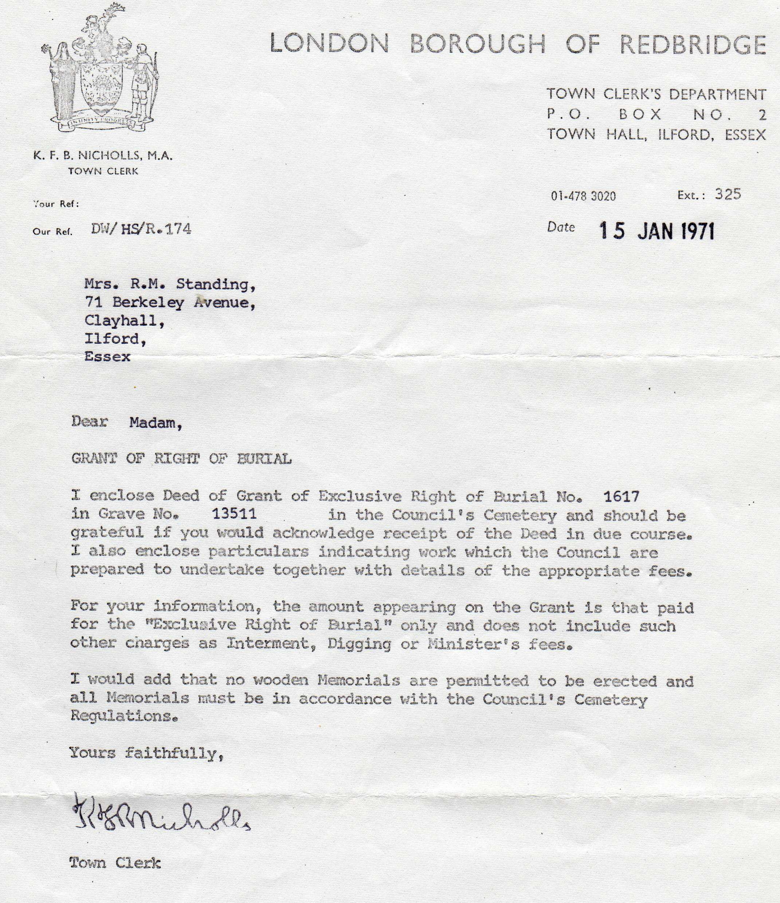
Bernard Standing with son Philip
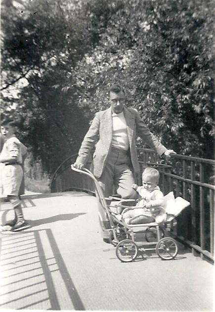
Marriage of Bernard Standing to Rose Jackson
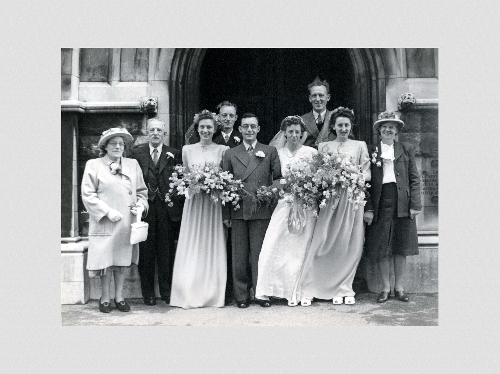
Rose Jackson and Bernard Standing
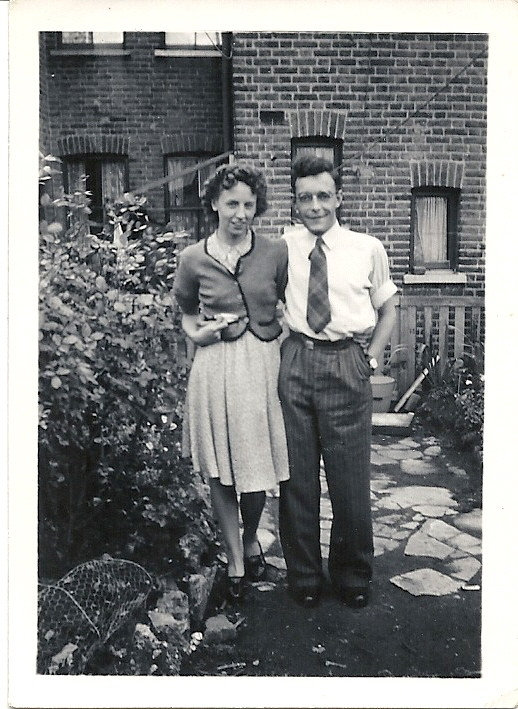
Christening of Philip Anthony Standing
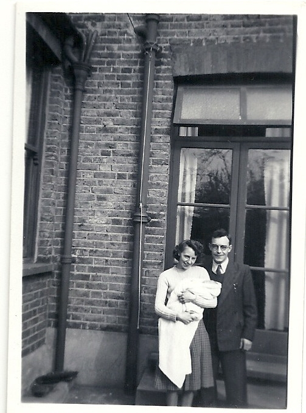
Bernard Standing - gravestone
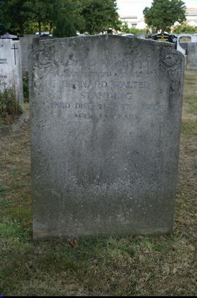
1964 Electoral Register
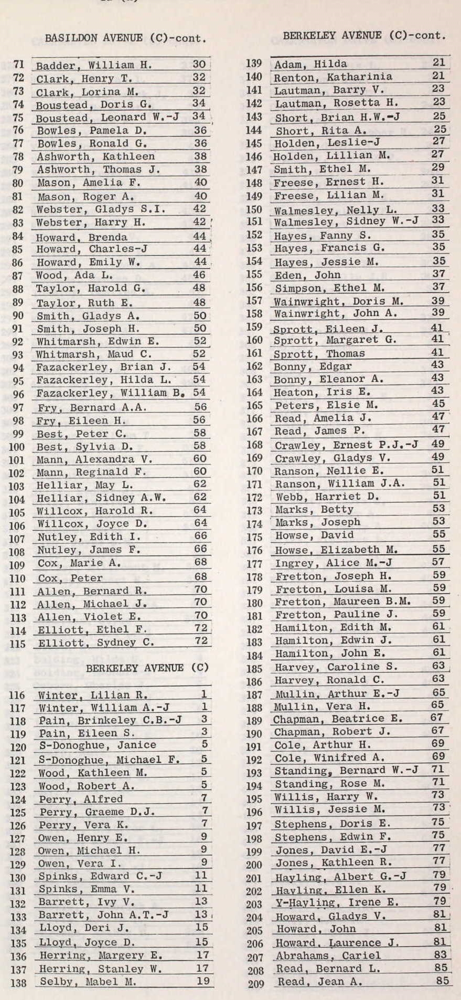
Bernard Walter Standing - birth certificate
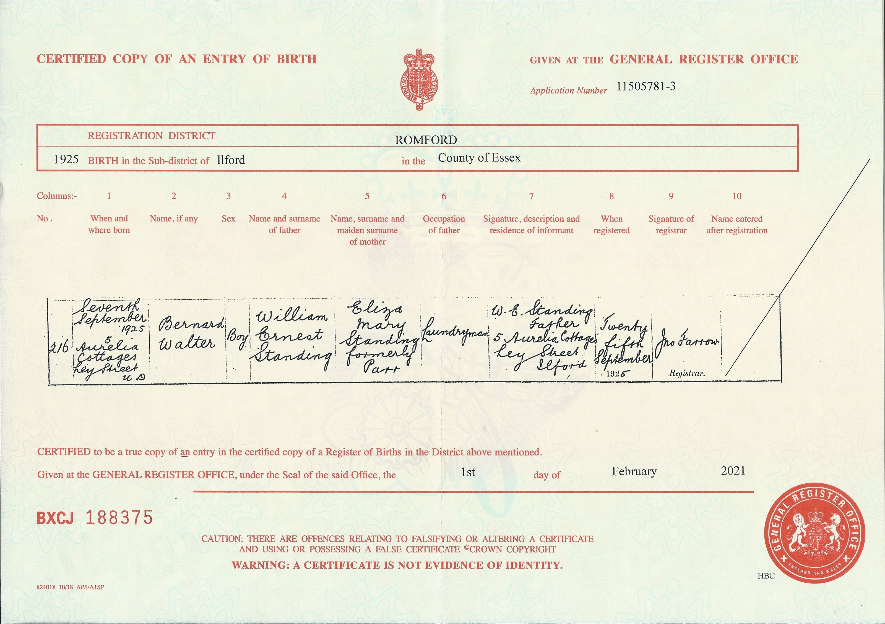
England & Wales deaths 1837-2007 Transcription - BMD-D-1970-4-AZ-001129-048
England & Wales marriages 1837-2008 Transcription - BMD-M-1949-2-AZ-001350-026
England & Wales births 1837-2006 Transcription - BMD-B-1925-3-AZ-001248-147
England & Wales Government Probate Death Index 1960-2019 - GBOR/GOVPROBATE/A/1969-1971/00646378
Family Tree

Generated by Ged2Site. Last updated on Jul 20, 2025